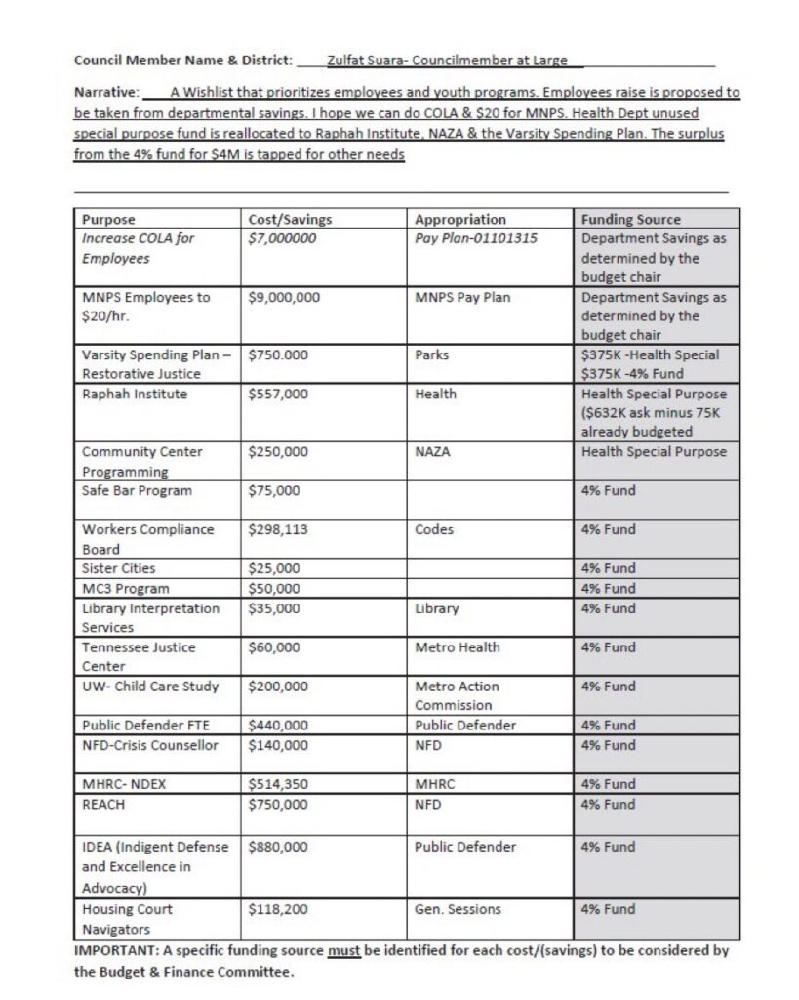
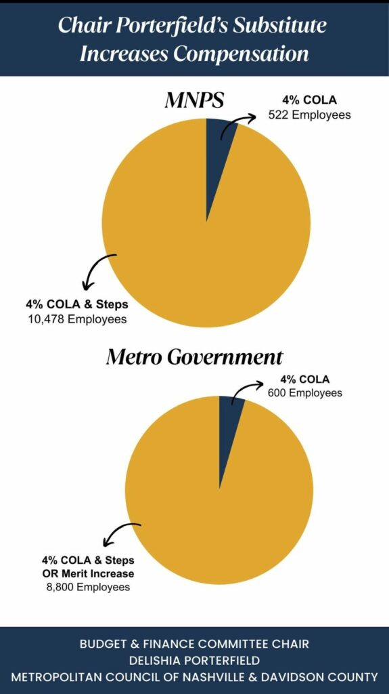
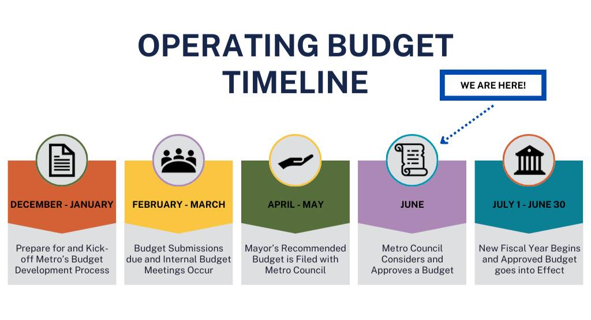
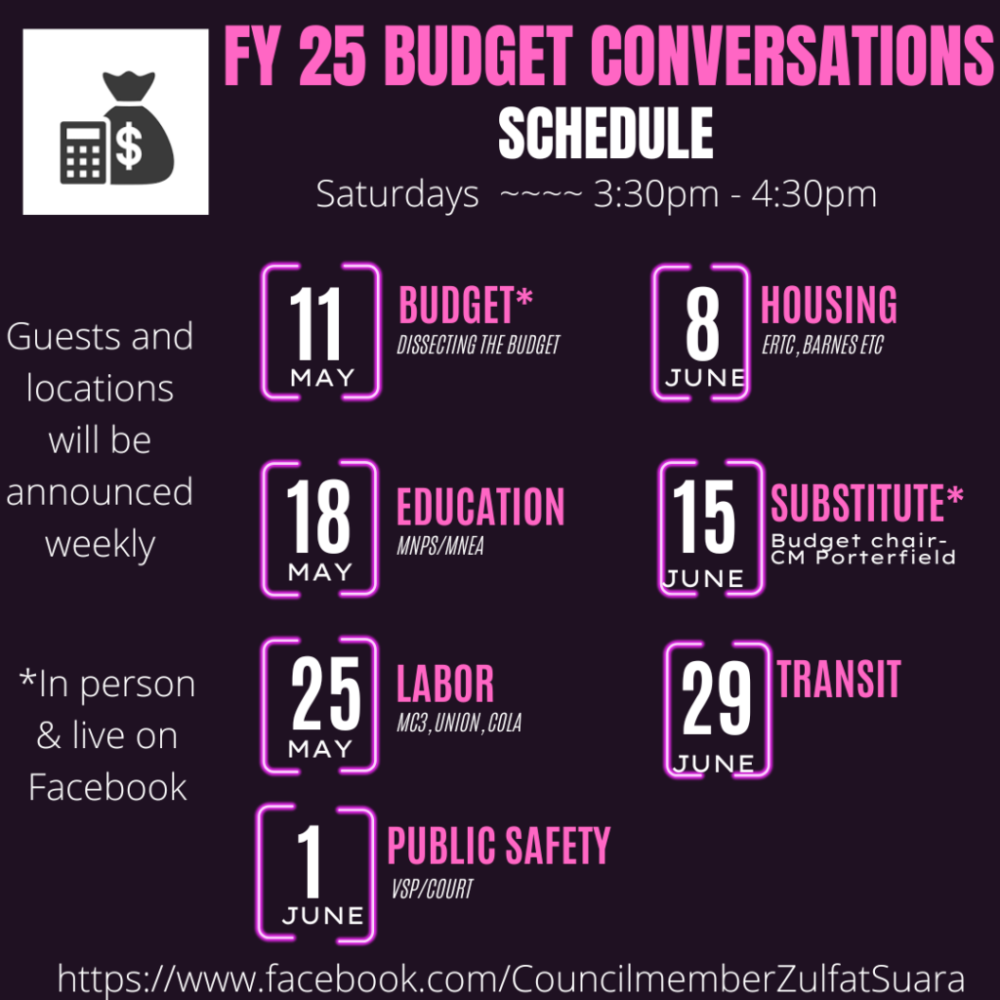

Chair’s Substitute Budget
Last Tuesday, Budget Chair Delishia Porterfield’s substitute budget was unanimously approved as the FY 25 Operating Budget, without a single amendment. This is a testament to her exceptional leadership, especially in a challenging budget year. In our latest discussion, I had the pleasure of joining Delishia Porterfield, Chair of the Budget Committee, to delve into the complex process and key aspects of the FY 25 budget. The meeting was held at the bustling Inglewood Library in District Seven, hosted by Councilmember Emily Benedict, who highlighted the library’s vital role in community engagement and learning.
Chair Porterfield’s extensive experience and dedication were evident as she explained the steps and challenges involved in finalizing the FY 25 budget, steering the committee through one of the most challenging fiscal years in recent memory.
The Budget Process
The Mayor’s Budget
The budget process began with the introduction of the mayor’s budget. According to the Metro Charter, the Mayor must propose an annual operating budget by May 1. The Council must pass its own budget by June 30, or the Mayor’s budget automatically takes effect. For a detailed analysis of Mayor O’Connell’s FY 25 budget, please refer to my May 18th blog post, “Dissecting the Mayor’s Budget.”
Community Engagement
The chair held several community meetings across the county to gather input from residents about their budget priorities. This engagement was crucial in ensuring the budget reflected the needs and desires of our diverse community. Delishia emphasized that these meetings provided valuable insights that shaped the final budget proposal.
Departmental Hearings
During the departmental hearings, each department presented its budget needs, including shortfalls and areas where additional funding was required. Councilmembers asked questions to gain a deeper understanding of each department’s plans. These hearings were instrumental in identifying critical areas needing additional support or reallocation of resources.
Councilmembers Wishlist
The final step before the chair finalizes the substitute is the Councilmembers’ wishlist. During the budget process, I gather information from guests on my conversations as well as audience comments and questions. My wishlist is based on information gathered from the departmental hearings, residents’ comments during the public hearing period, and the information from my budget conversations.

Chair’s Budget Focus
Chair Porterfield emphasized that her primary focus was to utilize an equity lens to prioritize the residents of Nashville, particularly our youth and city employees.
Flat Budget Year
This year, we faced a flat budget, meaning that our revenue projections were similar to the previous year, but costs had increased. This situation required us to make difficult decisions about where to allocate limited resources. Despite a flat budget year, the chair’s substitute did not raise taxes, avoided cuts to essential services, and there were no additional cuts to departments.
Prioritizing Employee Pay
Ensuring fair compensation for Metro employees was a top priority. The proposed budget included a 4.0% cost of living adjustment (COLA) and step increases, crucial for retaining and attracting talent. The COLA brought our lowest-paid MNPS employees up to $19.47/hour. Combined with step and merit increases, overall compensation increased by 7% for 95% of MNPS and Metro employees.
Community Programs and Services
The budget also focused on funding key community programs, such as the Reach program, which provides mental health support in emergency situations. Delishia highlighted the importance of these programs in enhancing community safety and well-being. By reallocating funds and finding efficiencies, we were able to maintain support for these critical services.
Investment in Youth
With the increase in youth violence, it is important that Metro fund different programs and initiatives to keep youth engaged. The chair’s substitute includes a $1M allocation to the Varsity Plan. This includes funding for the Office of Youth Safety, as well as funding for the community center programs and restorative practices. The Varsity Plan and other alternative safety programs were discussed during my budget conversations on Youth Safety and Community programs. I was glad to include these in my wishlist and grateful that they were included in the chair’s substitute.

What’s in the Chair’s Substitute Budget?
Increase COLA from 3.5% to 4%– $7M
This change ensures that employees are at least at the inflation rate of 4%. Paying at the same rate means employees will not be spending more than they make. The increase also lifts our lowest-paid MNPS workers to $19.47/hr, plus steps.
Reach Program -$750K
Expanded to provide continuous support for mental health crises. The Reach program has already helped de-escalate numerous situations, providing critical support to individuals in need. One story that particularly stands out is the impact of the Reach program on a young man experiencing a mental health crisis. Thanks to the program, he received immediate support, which not only de-escalated the situation but also connected him with ongoing mental health services. This intervention likely prevented a potential tragedy and set him on a path to recovery.
Varsity Spending Plan –Office of Youth Safety- $1M
Funded to implement restorative justice and conflict resolution programs. The Office of Youth Safety is expected to create safer environments for our youth, reducing the likelihood of conflicts and promoting positive outcomes. The Varsity Spending Plan also includes a Community Center program that is designed to keep youth engaged.
Build it Right Worker Compliance Board– $300K
Funding for a new division of Contract Compliance that would have an Executive Director and 1-2 Inspectors – with the goal of getting fully staffed to 4 inspectors in the future. This would allow Metro to ensure worksites are safe, and if not safe, send those findings to the proper authorities or remediate the issues through negotiation.
Crisis Counselor– $140K
Two Crisis Counselor positions for the Fire Department. These positions will ensure that emergency employees taking care of residents can get help dealing with the trauma that comes with the job.
Housing Navigators –$118K
For the General Sessions Court to assist residents facing eviction. The Eviction Right to Counsel program attorneys are not at the courthouse every day. The 2 navigators will be able to provide guidance to residents when the ERTC attorneys are not available.
Period Poverty– $150K
Will fund the provision of feminine hygiene products in schools and public places. According to the American Medical Women Association, difficulty affording menstrual products can cause women and girls to stay home from school and work, with lasting consequences on their education and economic opportunities.
ONEbox– $20K
Funding for the ONEbox delivery mechanism for Narcan to help reverse overdoses and additional funding support for the Office of Nightlife.
MC3 Program– $50K
MC3 is a program to introduce Nashvillians from various backgrounds to the trades and helps them connect to local unions and trades across the city.
Library Language Access– $35K
There are 6 major languages spoken in Davidson County in addition to English: Spanish, Arabic, Kurdish, Somali, Burmese, and Vietnamese. Funding will enable NPL to implement call-in translation services, as well as translating more distribution materials into other languages for patrons for whom English is not their first language or are non-English speaking.
Other Funding– $2.55M
The substitute includes funding for IDEA – Indigent Defense and Excellence in Advocacy ($400K), Safe Bar Program- ($75K) staffing for Metro Human Relations Commission ($257K), staffing for the Public Defender’s office ($779K), staffing Metro Animal Care Center ($20K) as well as funding for Mary Parrish Center ($120K), TN Justice Center ($60K), Neighbor2Neighbor ($15K), Sister Cities ($25K) Competency Court ($75K), and Raphah Institute ($159K). The substitute also includes funding for a county-wide child care study ($200K), additional funding for the Film & Music Commission ($150K) and an equity study plan for the Arts Commission ($215K).

A final copy of the substitute budget can be found here. Also, if you missed this insightful conversation with Chair Porterfield, you can watch the entire episode at the link below.
Concluding Remarks
I want to commend the budget chair for a job well done. Thanks to the union and organization leaders, as well as residents, for engaging in the process. I am grateful to my colleagues for attending the workshops and for their input. Above all, thanks to Chair Porterfield for her leadership. This is the toughest budget in my 5 years on the council. For the chair to be able to raise COLA and fund the many programs is no small feat. Thanks also to Mayor O’Connell, the Finance and Council team for their assistance in making it happen.
NEXT BUDGET CONVERSATION
There is no budget conversation today, June 22. My family and I will be at our son’s graduation from his residency program. All praise be to the Almighty, we now have another full-fledged physician in our family. I will be back on June 29 with the last budget conversation for the year, which will be focused on “Transit.”

Please continue to stay engaged and share your thoughts and ideas about the budget and other important issues facing our city. Your input is invaluable. Together, we can ensure a bright and sustainable future for our great city.
Thank you for your continued support and for taking the time to read this post. Together, we can ensure a bright and sustainable future for our great city.
Best,
Zulfat